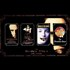

<html lang="en">
 <head>
<!-- Favicon -->
<link rel="shortcut icon" href="../../favicon.ico">
  <meta charset="utf-8"/>
  <title>
   Mandela Effect Research Committee vol. 1, part 1
  </title>
  <meta content="Post on /v/Conspiracy from 2016-03-11 by muffalettadiver." name="description"/>
  <meta content="Mandela Effect Research Committee vol. 1, part 1" property="og:title"/>
  <meta content="Post on /v/Conspiracy from 2016-03-11 by muffalettadiver." property="og:description"/>
  <link href="../../static/css/page.css" rel="stylesheet"/>
  <meta content="https://voat.conspiracy.hackliberty.org/thumbnails/b6/e2/b6e2e80c-7f98-412a-92f5-fdcf6fe54f8c.jpg" property="og:image"/>
  <meta content="https://voat.conspiracy.hackliberty.org/v/conspiracy/912527.html" property="og:url"/>
  <meta content="width=device-width, initial-scale=1" name="viewport"/>
  <link href="https://voat.conspiracy.hackliberty.org/v/conspiracy/912527.html" rel="canonical"/>
  <meta content="article" property="og:type"/>
  <meta content="Voat /v/Conspiracy Archive" property="og:site_name"/>
  <meta content="en_US" property="og:locale"/>
  <meta content="summary_large_image" name="twitter:card"/>
  <meta content="Mandela Effect Research Committee vol. 1, part 1" name="twitter:title"/>
  <meta content="Post on /v/Conspiracy from 2016-03-11 by muffalettadiver." name="twitter:description"/>
  <meta content="https://voat.conspiracy.hackliberty.org/thumbnails/b6/e2/b6e2e80c-7f98-412a-92f5-fdcf6fe54f8c.jpg" name="twitter:image"/>
 </head>
</html>
<body class="dark">
 <div id="container">
  <!-- array (
  'submissionid' => 912527,
  'creationDate' => '2016-03-11 06:19:52',
  'domain' => 'youtube.com',
  'formattedContent' => NULL,
  'isAdult' => 0,
  'isAnonymized' => 0,
  'subverse' => 'Conspiracy',
  'thumbnail' => 'b6e2e80c-7f98-412a-92f5-fdcf6fe54f8c.jpg',
  'title' => 'Mandela Effect Research Committee vol. 1, part 1',
  'url' => 'https://www.youtube.com/watch?v=9bKIIc2q3DM',
  'userName' => 'muffalettadiver',
  'archivedLink' => NULL,
  'archivedDomain' => NULL,
  'isDeleted' => 0,
) -->
  <div style="text-align:center; font-size:24px; font-weight:bold;">
   <a href="../../index.html" style="text-decoration: none; color: inherit;">
    Voat /v/Conspiracy Archive
   </a>
  </div>
  <div class="content" role="main">
   <div class="sitetable linklisting" id="siteTable">
    <div class="submission id-912527 link type-text" id="submission-912527">
     <a name="submissionTop">
     </a>
     <p class="parent">
     </p>
     <a class="thumbnail may-blank" href="https://www.youtube.com/watch?v=9bKIIc2q3DM" target="_self">
      
     </a>
     <div class="entry unvoted">
      <p class="title">
       <a class="title may-blank" href="https://www.youtube.com/watch?v=9bKIIc2q3DM" tabindex="1" target="_self" title="Mandela Effect Research Committee vol. 1, part 1">
        Mandela Effect Research Committee vol. 1, part 1
       </a>
       <span class="domain">
        (
        <a href="https://archive.searchvoat.co/search.php?d=youtube.com">
         youtube.com
        </a>
        )
       </span>
      </p>
      <p class="tagline">
       submitted
       <time datetime="2016-03-11T06:19:52+00:00" title="03/11/2016 6:19:52 AM">
        2016-03-11T06:19
       </time>
       by
       <span class="userattrs">
        <a class="author may-blank" href="https://archive.searchvoat.co/search.php?u=muffalettadiver">
         muffalettadiver
        </a>
       </span>
      </p>
      <ul class="flat-list buttons">
       <li class="first">
        <a class="comments may-blank" href="https://archive.searchvoat.co/v/Conspiracy/912527" rel="nofollow">
         3 comments
        </a>
       </li>
      </ul>
     </div>
     <div class="child">
     </div>
     <div class="clearleft">
     </div>
    </div>
    <div class="clearleft">
    </div>
   </div>
   <div class="horizontal-line">
   </div>
   <div class="commentarea">
    <div class="sitetable nestedlisting" id="siteTable">
     <div class="child id-4566057 comment even" style="">
      <div class="entry unvoted">
       <div class="noncollapsed" id="4566057" style=";">
        <p class="tagline">
         <a class="author may-blank" href="https://archive.searchvoat.co/search.php?u=ElspethTirel">
          ElspethTirel
         </a>
         <span class="userattrs">
         </span>
         <time datetime="2016-03-11T08:44:23+00:00" title="3/11/2016 8:44:23 AM">
          2016-03-11T08:44
         </time>
        </p>
        <div class="usertext-body may-blank-within" id="commentContent-4566057">
         <div class="md">
          <p>
           <p>
            I am a fan of this video:
            <a href="https://www.youtube.com/watch?v=b3gJZw6X-LA#t=5889">
             Mark Passio on the Chaos Sorcery of 9/11 - Kabbalah, Tarot &amp; Freemasonry - Symbolism and Numerology
            </a>
            . I think that the people in power definitely want us to think that they believe in magic, satanism- what with the obvious symbolism everywhere, the horrific things our leaders have been doing, etc etc.
           </p>
           <p>
            I'd
            <em>
             like
            </em>
            to believe in the Mandela Effect, and I think- if it
            <em>
             is
            </em>
            true -that major events, events which impact a large percentage of humanity causes it. Perhaps an effect on the collective consciousness?
           </p>
           <p>
            Would the mandela effect confirm manyworlds if it was proven to happen?
           </p>
          </p>
         </div>
        </div>
        <ul class="flat-list buttons">
         <li class="first">
          <a class="bylink" href="https://archive.searchvoat.co/v/Conspiracy/912527/4566057" rel="nofollow">
           link
          </a>
         </li>
        </ul>
       </div>
      </div>
      <div class="child id-4568257 comment odd" style="">
       <div class="entry unvoted">
        <div class="noncollapsed" id="4568257" style=";">
         <p class="tagline">
          <a class="author may-blank" href="https://archive.searchvoat.co/search.php?u=discojack">
           discojack
          </a>
          <span class="userattrs">
          </span>
          <time datetime="2016-03-11T16:08:22+00:00" title="3/11/2016 4:08:22 PM">
           2016-03-11T16:08
          </time>
         </p>
         <div class="usertext-body may-blank-within" id="commentContent-4568257">
          <div class="md">
           <p>
            <p>
             It's not exactly related to magic, or satanism. Magic is just generally a term used in the circles that coin the term to describe something indescribable. It's only until recently that people have started to write essays and study such things openly without prosecution and people saying its satanism just want to blanket the whole thing in fear so TPTB still have their nice little security bubble and dumbed population.
            </p>
            <p>
             I think you're on the right track about collective consciousness.
            </p>
           </p>
          </div>
         </div>
         <ul class="flat-list buttons">
          <li class="first">
           <a class="bylink" href="https://archive.searchvoat.co/v/Conspiracy/912527/4568257" rel="nofollow">
            link
           </a>
          </li>
         </ul>
        </div>
       </div>
       <div class="child id-4569307 comment even" style="">
        <div class="entry unvoted">
         <div class="noncollapsed" id="4569307" style=";">
          <p class="tagline">
           <a class="author may-blank" href="https://archive.searchvoat.co/search.php?u=ElspethTirel">
            ElspethTirel
           </a>
           <span class="userattrs">
           </span>
           <time datetime="2016-03-11T17:55:28+00:00" title="3/11/2016 5:55:28 PM">
            2016-03-11T17:55
           </time>
          </p>
          <div class="usertext-body may-blank-within" id="commentContent-4569307">
           <div class="md">
            <p>
             <p>
              I am a fan of Aleister Crowley's explanations of so-called "natural magic" or "law magic." How, true magic is in our words, and our actions, how it affects other people, how we can manipulate emotions and thoughts by way of speech or writing.
             </p>
            </p>
           </div>
          </div>
          <ul class="flat-list buttons">
           <li class="first">
            <a class="bylink" href="https://archive.searchvoat.co/v/Conspiracy/912527/4569307" rel="nofollow">
             link
            </a>
           </li>
          </ul>
         </div>
        </div>
       </div>
      </div>
     </div>
    </div>
   </div>
  </div>
 </div>
<!-- Footer Section -->
<footer class="container-fluid mt-3">
  <p class="small mb-0">
    /v/conspiracy archive has 42504 posts and 159856 total comments.
    <a href="https://git.hackliberty.org/c0mmando/voat-conspiracy-archive/">source code</a>.
  </p>
</footer>

<script src="../../static/js/jquery-3.7.1.slim.min.js"></script>
<script src="../../static/js/comments-toggle.js"></script>

</body>
